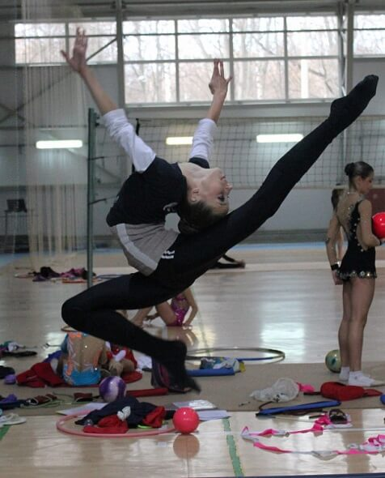
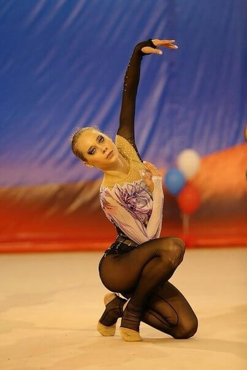
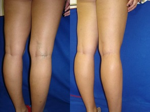

Dezső Erzsébet híres tornásznő.
Dezső Erzsébet híres tornásznő.
Egy bajnoknő mindössze egy hét alatt gyógyult meg a visszértágulattól. Profi módszer!
Van tapasztalatom abban, hogy visszértágulat gyógyítható, még ha rendszeresen sportolni, illetve ha az Ön labai és izmokai mindig a megfeszülő alapotban leszunk. - Bizonyítja Dezső Erzsébet.
Dezső Erzsébet híres tornásznő.
Dezső Erzsébet népszerű magyar fiatal tornásznő, aki már többször a vilagbajnok lett az All-around világbajnokságban. Erzsébet egy világcsúcsot tartott, hiszen ő az aranyérmet kapott legfiatalabb resztvevő az All-around világbajnokságban tornásznő lett.
- Erzsébet, ez a te csúcsod, a te rekordod, mert te a lefiatalabb tornásznő, aki kapott az aranyérmet az All-around világbajnokságban!!! Mesélj egy kicsit nekünk a munkádról légy szíves.
- Ritmikus gimnasztika ez egy a legszebb női sport típusa. Biztos, hogy ehhez van szükség egy nagy munkára, sokat kell edzeni, gyakorolni, hiszen bármilyen mozgás hihetetlenül nehézen végrehajtani. Nem engedhetem meg magamnak, hogy amikor haza térek vissza, nem dolgozok ki minden edzést, amelyet nem tetszettek meg az edzőmnek. Edzek 5-6 órát naponta.
- Erzsébet, úgy látszik, hogy nagyon sokat edzel. Voltak-e valamikor neked az egészségi problémáid a nagy terhelések hátteréül?
- Persze, hiszen minden testedzésnek az egészségre és a testre kifejtett hatásához is. Körülbelül másfél évvel ezelőtt az edzések utána, visszértágulat kezdődött nekem. A lábaim borzalmas nézett ki! Jobb, ha nem emlékszik erre! Az ereim felpuffadt és kék szinű lettek. Az erős fajdalmat éreztem!
 Erzsébet gyerekkora óta tornázik (a fénykép: személyes archívum)
 És láthatjuk, hogy egy rövid idővel hova jutottam,
ameddig tornászom (a fénykép: személyes archívum)
És láthatjuk, hogy egy rövid idővel hova jutottam,
ameddig tornászom (a fénykép: személyes archívum)
- El tudok képzelni, hogy nagyon meg akarta szabadulni ettól!
- Igen, megpróbáltam mindent, amit tudtam! Drága az eljárások és a kezelések külföldön voltak. És persze, nem kiiktatottam a hagyományos orvoslás oldalát. Még megállapodtam abban, hogy a műveletre van szükségem, de végül nem tudtam sportolni sokáig.
- És mi lett ennek az eredményed?
- Egyáltalán nem volt sikeres. Az elején mintha minden rendben volt, mintha minden sikerült, ahogy a tünetek, amelyek voltak eltűntek, de hamarosan minden visszajött. Néha még egyre rosszabb lettem. Sajnos, nem tudtam, mit kell tennem, se tudtam edzeni, majd nem tudtam javulni a helyzetemet:...
 Egy kollégámmal és barátommal képzési Kaposvári
Dórával.
Egy kollégámmal és barátommal képzési Kaposvári
Dórával.
- És mit gondolsz, milyen műtétet végeztek rajtad??
- Hogyan mondjuk, ez volt a legjobb módszer, amelyet megpróbáltam. De ez egy jó módszer, csak akkor, ha ez ingyenes, szóval nagyon drága az atlágos embereknek. És természetesen ez időpocsékolás, hosszú ideig nem edzehető. Ez egy nagyon költséges módszer, nem mindenki számára. És én személy szerint nem hiányzik annyira sok az edzéseket és a bajnokságokat. Tehát csak a végén az én sport karrierem. Miután belekóstoltam, és elég volt! Sőt, a művelet nem oldja meg a problémát, csak egyszerűen megkönnyíti a betegség egy ideig.
- Nos, nézi a lábadat, én is hiszem, hogy még mindig megtaláltad megoldást a problémádra...
- Igen, egy kollégám és a legjobb barátom, vagyis az ellenfelem, ahogy nevezik őt, Kaposvári Dóra segített nekem. Egyszer az edzések során ő adta nekem egy dobozt és azt mondta: „Végy egy kúra ezzel! Szükségünk van rád itt, és nem a kórházban!"
 Az eredményem a művelet utána (a második kép), és az
eredményem gél utána (a harmadik kép)
Az eredményem a művelet utána (a második kép), és az
eredményem gél utána (a harmadik kép)
- És ez elég volt ahhoz, hogy meggyógyítani a visszért?!
- El tudod hinni?! Az a gél, amelyet javasolta nekem Dóra igazán segített!

- Nos, milyen módszerrel? Mondd el a titkodat!
-Nincs titok! Ez volt egy profi gél a vénák kezelésére egy japán technológiával együtt európai tudósokkal kifejlesztett termék. Úgy véljük, a legbiztonságosabb módszerként annak, hogy a kitágult a visszerek kezelésére a tartalma miatt. A kompozíció a természetes sűrűségéből áll.
- Te tényleg csak a gél használásával megszabadultad magad minden problémáidtól? De hogyan működik?
- Őszintén szólva, én csak ! (ride, ndr)-t használtam . Ez a csodálatos gél stabilan küzd a problémákkal, stabilizálja a vérkeringést és tehermentesíti a vénák nyomását. Nekem nagyon segít amikor hosszú és fárasztó edzéseim vannak!
Nem tudom mindent a fiziológiából, de mi a fontos számomra, hogy köszönhetően a gélnek megszabadultam a problémámtól! Ha szeretnének, fel lehet ismerni többet ez a termékkel a gyártó honlapján

- Erzsébet, mennyi ideig tart, hogy megszabaduljon ezt a problémától az ereket? Mennyit kell használni -t, az eredmények elérése?
- Kell használni naponta kétszer, reggel és este, lefekvés előtt.
Nem fogod elhinni, de már 3 nap múlva megláttam a fejlesztéseket! Ödéma eltűnt és a lábaim jól nézett ki. Nagyon jól éreztem magam az edzés után.
 Dezső Erzsébet
Dezső Erzsébet
- Azaz, 3 nap után észre vetted a javulást?
- Igen. 2 nap múlva észre vettem, hogy a vénám már nehézen látható a lábaimon! Most könnyen tudok dolgozni, például egy modellként!
- Mennyi időt töltettél el ahhoz, hogy teljesen meggyógyítani a lábaid?
- Nem számoltam, hogy hány nap múlva, de körülbelül egy hétig. Majd én továbbra is használtam a gélet 3, 4 napig, mert attól féltem, hogy az eredményeim eltűntek
De tévedtem! A vénák a lábakban megszűnt zavarni. Teljesen elfelejtettem róla, és az új életet elkezdtem! (Mosolyog)
 Dőzsa Erzsébet
- Van-e kedved ajánlani valamit az olvasóinknak?
- Szeretném azt mondani, hogy ez nem csak egy egyszerűen különböző anyagok keveréke, amely része ennek a csodálatos gélnek, amely kezeli az összes kapcsolódó problémák visszerektól. Az a tény, hogy amiból áll a termék tartalma, a tudósokkal létrehozott egy egyedülálló technológiával keresztül ugyanis rögzíti őket és attól olyan különleges. Ezért vigyázz, sok hamisítvány van! Fontos, hogy vegyünk egy gélet, amely átment az összes tanúsítása: én pedig megveszem csak a a gyártó hivatalos honlapján. Ez egy hatékony termék a garanciája 100% és az nem egy hamis.
Azt kívánom nektek, hogy találjátok magátok, és győzzétek meg ezt a szörnyű problémát mint visszért! Minden rendben lesz, az a lényeg, hogy higgyétek! A legjobb jutalom az, hogy jól érezzük magunkat. Csakúgy, felébred a jó hangulattal és kedvvel. És a legfontosabb dolog az, hogy megértsük, hogy csináljátok magad, fogjátok tudni csinálni!
Remélem, hogy a tapasztalatom segít nektek és fog adni erőt leküzdeni ezt a betegséget! Kívánok mindenkinek sok szerencsét a visszér elleni küzdelmében!
A kommentek
Szia Erzsébet, te egy nagyon kedves lány és egy tehetséges tornásznő! A történeted nagyon motivál engem! Nálam ugyanolyan problémák vannak a vénákkal a mindkét lábámon, de a jobb lábam nagyon aggaszt engem: a lágyéktől kezdve a térdig fáj, és elviselhetetlenné válik, még az esti órákban. És mégis, én még nem iratkoztam fel az orvoshoz, meg akarom gyógyítani magát. Majd megírom és elmondom nektek, hogyan mennek a dolgaim
Köszönöm Erzsébet! Tegnap érkezett a csomagomat. Minden rendben van. Most elkezdtem használni. Várakozásban vagyok az eredményekre 5 napon belül!
Mindenkinek csak a cipősarok nélkül vagy csak kis cipősarokkal kellene hordania cipőjét. A magas sarkú cipők miatt problémák a vénákkal! Csak arra gondolnak, hogyan vásároljanak jó cipőt, majd panaszkodnak a szörnyű lábfájásra.
Szia Erzsébet! Rendeltem a gélet.
alig várom, míg megkapjam a csomagodat! :)
A lányom hozta nekem a gélet Japánból 5 évvel ezelőtt, semmi új!
Hirtelen! Már megrendeltem és elkezdtem használni. Pár nap után elmesélem a sikereséről.
A termék nem új, mindenki tudja ezt a gél. 2 évvel ezelőtt az édesanyám a gélnek köszönhetően megbirkózta a problémáit az erekkel
Az Egyesült Államokban 5 évvel már ezzel a gélmel használjuk! A lányok a munkájukon olyanok, mint a csillagok a Hollywoodban!
Üdvözlöm... használom a gélet 3 nappal, és nem is tudom, hogyan kell kifejezni hálámat! Köszönöm Erzsébet!!! A lábaim, mint az újak!
Ez csak 4 nap, és már láthatom az eredményt! Most a lábaim meg még szebbek! Nagyon boldog vagyok!
Megvettem egy gélet és imádom! Még csak egy hete, és minden volt, csak így sokkal jobban. Ki gondolta volna, én biztosan nem vártam...mivel a költségét, ez csak egy ajándék.
Erzsébet, én tudtam azt a gélről, mert régen Kínában vettem meg. Vénás problémákat egyszerűen eltűnt, hirtelen, ugye? Azt tanácsolom! Mindenkinek!
Az én férjemnek nagyon tetszett! Azt mondja, hogy én is részt kell vennem a versenyben "A kisasszony szép lábak, ni
működik, megrendeltem a hivatalos honlap keresztül az előrefizetés nélkül és a csomagszállítás érkezett 6 napon belül. Az erek egyszerűen eltűntek egy hét múlva.
Nem vagyok az egyetlen! Megszabadultam a lábamat a problémáktól csak egy hét alatt. -Szóval, hogy még mindig nem tudom elhinni :-D
A lábaim már nem fájnak és nagyon szépen néznek!! Szuper! Azt tanácsolom minden lánynak!
azt is tudom . A nagynéném már nem panaszkodik fáj a lábára (-;
Helló! Ez a gél egyszerűen a legjobb, meg kellett várni egy hetet, hogy megszabaduljam a betegségemtól.
Ez a bomba! A lábaim most egészséges és gyönyörű! Egyébként a csomagot megkaptam 3 nap alatt.
Jó reggelt, hölgyeim! A feleségem megvásárolta ez a gélet és most a lábai csak tökéletes! Nem tudom csak mondani a szavakat, mennyire boldog vagyok! Azt tanácsolom!
Semmi új! Minden nő tudja, ez a gél, hogy ha valaki nem tudja, akkor ő csak nem akar megszabadulni a betegségtól.
Köszönöm a cikket. Erzsébet te vagy a legjobb! Remélem, hogy a karriered sikeres lesz! Elmentem, hogy rendeljem a gélet.
Ez az, amit akartam! Mindenki irigyelni fogják!
Kínában mindenki használja ezt a gélet és működik a bumm! Mint mindig, mi az utolsók akik mindent tudnak mindenről, várjuk egy évszázadát, hogy elkaphatjuk a terméket...